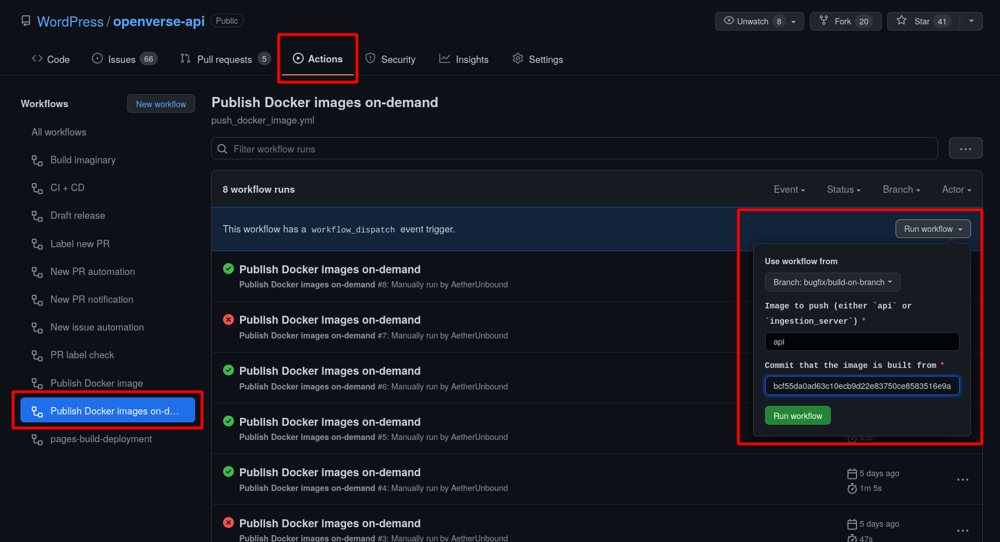

Publish#
The production API and ingestion server Docker images are published to Github Container Registry. They can be found here:
Ingestion server: ghcr.io/wordpress/openverse-ingestion_server
These images are published under two conditions: on release, or manually.
On release#
When a new release is cut, the CI/CD action will run. The final step of this action uploads the Docker images to their respective registries with the following tags:
Release reference name, typically the git tag (e.g.
v2.4.2)latestThe commit SHA of the tagged commit (e.g.
b25879b84ec9d7b650be689c03384937a93eb06d)
In some cases, releases may not alter the Docker image. For instance, in a release where only the API was changed, the ingestion server image would have the same Docker image hash. In these instances, the new tags are added to the existing image.
Manually#
The Docker image for a particular service can also be published manually. This
process is initiated by the
Publish Docker images on-demand
action. The workflow file for this action can be found here:
push_docker_image.yml.
This action will only publish & tag a service’s image with the commit SHA
(i.e. it will not tag with latest or the git reference name). This is useful
for cases where one or more Docker images need to be tested on a staging
environment before being merged and cut with a release. This action also
requires that the CI/CD workflow has previously run on the specified commit.
This typically requires a PR in order to initiate.
Note that this action can only run on commits that had successful CI/CD runs in the last 90 days due to GitHub’s default artifact retention policy.
Steps#
Note: GitHub’s documentation provides screenshots for the various steps
Navigate to the
openverse-api“Actions” tab in GitHub: github.com/WordPress/openverse-api/actions.Select the “Publish Docker images on-demand” workflow.
Click the “Run workflow” button.
(Optional) change the branch that the workflow is running from (this does not change anything about the target commit)
For the
imageparameter, specify eitherapioringestion_server.For the
commitparameter, specify the commit that the built Docker image artifact should be pulled from.
Click the green “Run workflow” button.
The newest run should appear in the Action list, and its status can be tracked from there.
